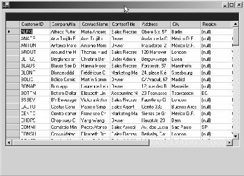
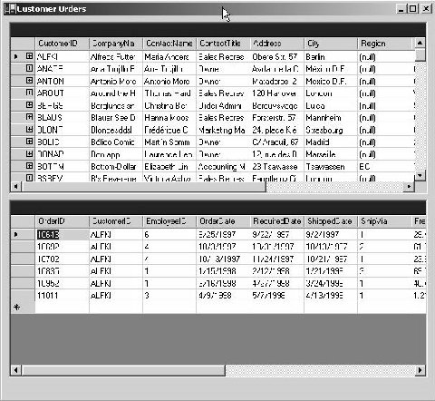

4
DataSets
The focus in this chapter once again
veers on to web services, but in the context of DataSets. A DataSet is a
collection of DataTable objects, which in turn, embody data.
a.asmx
<%@ WebService Language="C#" Class="zzz" %>
using System.Web.Services;
using System.Data;
public class zzz
{
[WebMethod]
public DataSet abc()
{
DataTable t = new DataTable("vijay");
DataColumn c;
c = new DataColumn();
c.DataType = System.Type.GetType("System.Int32");
c.ColumnName = "c1";
t.Columns.Add(c);
c = new DataColumn();
c.DataType = System.Type.GetType("System.String");
c.ColumnName = "c2";
t.Columns.Add(c);
DataSet d = new DataSet();
d.Tables.Add(t);
return d;
}
}
The opening line in the abc
function within the asmx file, creates a DataTable object called t. The parameter
supplied to the constructor of the DataTable object is the name of the table,
'vijay'.
Every DataTable object is
composed of columns, wherein, every single column is represented by a
DataColumn object. After creating an instance c of the DataColumn class, the
DataType property in the DataColumn class is initialized to the data type of
the column, which in this case, is an int. Therefore, the static GetType
function from the Type class is called with the full name of the type as its
parameter.
The ColumnName property assigns
a name to the column, which is c1 in this case. The DataTable has a Columns
Collection property called Columns, which stores all the DataColumn objects.
With the help of the Add function that is incorporated in it, the column named
c1 is added to the Columns collection.
As a consequence, the Columns
property now holds one column. A fresh instance of the DataColumn object is
created with the DataType of string, and is named as c2. This DataColumn object
too is added to the columns collection. Thus, the collection now is in
possession of two columns, viz. c1 and c2. Finally, a DataSet d comprises of
the Tables collection property Tables and employs the services of the Add
function within it, to add the table t to the dataset.
A Polite Reminder
The steps to be taken in the
order of succession, are as follows:
• Enter the url as http://localhost/a.asmx?WSDL in the browser.
• Copy the contents displayed on the browser into the file aa.wsdl under the www subdirectory.
• Ensure that the first line begins at the very first column.
• Change the url from http://localhost/a.asmx to http://localhost:8080/asmx.
• Finally, start the Trace utility program from the SOAP toolkit program option, to view the SOAP request and the SOAP response packets.
• Run the batch file, z.bat, stipulated in the previous chapter, in order to obtain the output, as depicted in the chapter.
Now, let us closely scrutinize a
DataSet representation in a wsdl file. We have displayed only the relevant portions
of the file, which are adequate for corroborating our explanation.
aa.wsdl
<s:schema attributeFormDefault="qualified" elementFormDefault="qualified" targetNamespace="http://tempuri.org/">
<s:import namespace="http://www.w3.org/2001/XMLSchema" />
<s:element name="abc">
<s:complexType />
</s:element>
<s:element name="abcResponse">
<s:complexType>
<s:sequence>
<s:element minOccurs="1" maxOccurs="1" name="abcResult" nillable="true">
<s:complexType>
<s:sequence>
<s:element ref="s:schema" />
<s:any />
</s:sequence>
</s:complexType>
</s:element>
</s:sequence>
</s:complexType>
</s:element>
<s:element name="DataSet" nillable="true">
<s:complexType>
<s:sequence>
<s:element ref="s:schema" />
<s:any />
</s:sequence>
</s:complexType>
</s:element>
</s:schema>
The abc element is devoid of all
content, as the function does not accept any parameters. Next, we stumble upon
and encounter a new element called 'import', which introduces all the schema
definitions in the XmlSchema document, thereby, facilitating references to them
in the schema document.
In the element abcResponse, the
element of abcResult has a complexType. The complexType for the abcResult
element contains two elements:
• The first element is the sequence, followed by another element, which currently has no name or type. Instead, it has a ref attribute. By using the ref attribute, other elements that were created earlier, are now accessible. In this case, a reference is made to the 'schema' element.
• The second element in the complex type is the element 'any', which permits access to all elements from any namespace.
There is yet another element
called 'DataSet', which has the 'schema' element and the 'any' element, just like
the earlier element. A salient point that needs to be emphasized here is that,
in the wsdl representation of a DataSet object, there is neither any mention of
a table named 'vijay', nor is there any sign of the columns or other details,
such as the Primary Key, etc. The client program merely calls the abc function,
without any parameters.
a.cs
public class aaa
{
public static void Main()
{
zzz a = new zzz();
a.abc();
}
}
The proxy code in zzz.cs
dispatches back the Dataset that has been returned from the abc function. The
DataSet is saved in the first member of the 'results' array.
zzz.cs
public System.Data.DataSet abc()
{
object[] results = this.Invoke("abc", new object[0]);
return ((System.Data.DataSet)(results[0]));
}
SOAP response
<abcResponse xmlns="http://tempuri.org/">
<abcResult>
<xsd:schema id="NewDataSet" targetNamespace="" xmlns="" xmlns:xsd="http://www.w3.org/2001/XMLSchema" xmlns:msdata="urn:schemas-microsoft-com:xml-msdata">
<xsd:element name="NewDataSet" msdata:IsDataSet="true">
<xsd:complexType>
<xsd:choice maxOccurs="unbounded">
<xsd:element name="vijay">
<xsd:complexType>
<xsd:sequence>
<xsd:element name="c1" type="xsd:int" minOccurs="0" />
<xsd:element name="c2" type="xsd:string" minOccurs="0" />
</xsd:sequence>
</xsd:complexType>
</xsd:element>
</xsd:choice>
</xsd:complexType>
</xsd:element>
</xsd:schema>
<diffgr:diffgram xmlns:msdata="urn:schemas-microsoft-com:xml-msdata" xmlns:diffgr="urn:schemas-microsoft-com:xml-diffgram-v1" />
</abcResult>
</abcResponse>
A DataSet, as is represented in
a SOAP payload, embodies all the relevant information.
The abcResult element commences
with a child element called schema from the XMLSchema namespace, as is
indicated by the namespace prefix xsd. The msdata namespace prefix is
initialized to a uri. The value currently assigned to it is the one furnished
by Microsoft.
The schema element is normally
assigned an id that represents the name of the DataSet. However, since we have
not supplied an id, the default name of NewDataSet has been used. The
targetNamespace and the default namespace are both set to null.
Within the schema, there exists
an element with the same name of NewDataSet, but this refers to the name of the
DataSet, since the IsDataSet attribute is set to true.
The complexType that defines the
structure of the DataSet, contains a 'choice' element that allows the selection
of only one of the many elements that are present. In this case, since there is
only a single element named 'vijay', the choice element is of no utility at
all. For the uninitiated reader, we reiterate that 'vijay' is the name of a
DataTable, as specified in the asmx file.
The DataTable element, i.e.
'vijay' is capable of having multiple occurrences. It has a sequence with two
column names, c1 and c2. Assigning the value of zero to minOccurs is indicative
of the fact that it is not obligatory to specify their values.
The last element is called a
diffgram. A diffgram is an XML serialization format that carries both, the original
as well as, the current data. This is pressed into service for marshalling a
dataset over. We shall delve deeper into this concept as we make a headway in
the book. Here, we have merely declared two namespaces, as there is no data
present in our table.
a.asmx
<%@ WebService Language="C#" Class="zzz" %>
using System.Web.Services;
using System.Data;
public class zzz
{
[WebMethod]
public DataSet abc()
{
DataTable t = new DataTable("vijay");
DataColumn c;
c = new DataColumn();
c.DataType = System.Type.GetType("System.Int32");
c.ColumnName = "c1";
t.Columns.Add(c);
c = new DataColumn();
c.DataType = System.Type.GetType("System.String");
c.ColumnName = "c2";
t.Columns.Add(c);
DataRow r = t.NewRow();
r["c1"] = 1;
r["c2"] = "hi";
t.Rows.Add(r);
r = t.NewRow();
r["c1"] = 100;
r["c2"] = "Bye";
t.Rows.Add(r);
DataSet d = new DataSet("sonal");
d.Tables.Add(t);
return d;
}
}
Here, we have not displayed the
files named aa.wsdl, a.cs and zzz.cs since the code contained in them remains
unaltered.
Soap response
<abcResult>
<xsd:schema id="sonal" targetNamespace="" xmlns="" xmlns:xsd="http://www.w3.org/2001/XMLSchema" xmlns:msdata="urn:schemas-microsoft-com:xml-msdata">
<xsd:element name="sonal" msdata:IsDataSet="true">
</xsd:element>
</xsd:schema>
<diffgr:diffgram xmlns:msdata="urn:schemas-microsoft-com:xml-msdata" xmlns:diffgr="urn:schemas-microsoft-com:xml-diffgram-v1">
<sonal xmlns="">
<vijay diffgr:id="vijay1" msdata:rowOrder="0" diffgr:hasChanges="inserted">
<c1>1</c1>
<c2>hi</c2>
</vijay>
<vijay diffgr:id="vijay2" msdata:rowOrder="1" diffgr:hasChanges="inserted">
<c1>100</c1>
<c2>Bye</c2>
</vijay>
</sonal>
</diffgr:diffgram>
</abcResult>
</abcResponse>
After creating a DataRow object r,
the NewRow function of the DataTable is put into operation in order to
introduce a fresh row. The indexers, with the names of the columns c1 and c2,
have been initialized to selected values, in order to fill up data in the two
columns. Finally, by employing the Rows collection, this newly initialized row
is added to the DataTable.
This process is iterated to add
another row to the DataTable 'vijay', thereby, resulting in two rows in the
table. The name of the Dataset is also changed to 'sonal'. However, no
variation is witnessed in either the wsdl file or the proxy or the server
because, the only innovation effected was, the introduction of data into the
DataTable.
In the SOAP response, the id of
the schema and element reflect the new value of 'sonal'. We have not displayed
the remaining portion of the schema file, since it remains unchanged.
The wsdl file demonstrates that
the abcResult element commences with a schema element, which may then be
followed by any other element, from any namespace. Here, the SOAP response
contains the diffgram element, which creates the namespace prefixes msdata and
diffgr. A diffgram may contain data from multiple namespaces. The next element
is the dataset name 'sonal'.
A Dataset, in turn, is
constituted of multiple tables. In addition to the above, there exists another
dataset called 'vijay'. Hence, an element called 'vijay' is created. This
element is assigned an id of vijay1, and the second record is allocated an id
of vijay2. The rowOrder attribute is akin to a row number, where the first
record is numbered as 0, the second as 1, and so on.
The hasChanges attribute is
assigned the value of 'inserted'. This is followed by the data of the row,
enclosed within tags, comprising of the names of the columns. Accordingly, a
DataSet first dispatches the schema, followed by the actual data.
a.asmx
<%@ WebService Language="C#" Class="zzz" %>
using System.Web.Services;
using System.Data;
public class zzz
{
[WebMethod]
public DataSet abc()
{
DataTable t = new DataTable("vijay");
DataColumn c;
c = new DataColumn();
c.DataType = System.Type.GetType("System.Int32");
c.ColumnName = "c1";
t.Columns.Add(c);
c = new DataColumn();
c.DataType = System.Type.GetType("System.String");
c.ColumnName = "c2";
t.Columns.Add(c);
DataRow r = t.NewRow();
r["c1"] = 1;
r["c2"] = "hi";
t.Rows.Add(r);
r = t.NewRow();
r["c1"] = 100;
r["c2"] = "Bye";
t.Rows.Add(r);
DataTable t1 = new DataTable("mukhi");
c = new DataColumn();
c.DataType = System.Type.GetType("System.Int32");
c.ColumnName = "d1";
t1.Columns.Add(c);
c = new DataColumn();
c.DataType = System.Type.GetType("System.String");
c.ColumnName = "d2";
t1.Columns.Add(c);
r = t1.NewRow();
r["d1"] = 1000;
r["d2"] = "hi23";
t1.Rows.Add(r);
r = t1.NewRow();
r["d1"] = 2000;
r["d2"] = "Bye23";
t1.Rows.Add(r);
DataSet d = new DataSet("sonal");
d.Tables.Add(t);
d.Tables.Add(t1);
return d;
}
}
Soap response
<abcResult>
<xsd:schema id="sonal" targetNamespace="" xmlns="" xmlns:xsd="http://www.w3.org/2001/XMLSchema" xmlns:msdata="urn:schemas-microsoft-com:xml-msdata">
<xsd:element name="sonal" msdata:IsDataSet="true">
<xsd:complexType>
<xsd:choice maxOccurs="unbounded">
<xsd:element name="vijay">
<xsd:complexType>
<xsd:sequence>
<xsd:element name="c1" type="xsd:int" minOccurs="0" />
<xsd:element name="c2" type="xsd:string" minOccurs="0" />
</xsd:sequence>
</xsd:complexType>
</xsd:element>
<xsd:element name="mukhi">
<xsd:complexType>
<xsd:sequence>
<xsd:element name="d1" type="xsd:int" minOccurs="0" />
<xsd:element name="d2" type="xsd:string" minOccurs="0" />
</xsd:sequence>
</xsd:complexType>
</xsd:element>
</xsd:choice>
</xsd:complexType>
</xsd:element>
</xsd:schema>
<diffgr:diffgram xmlns:msdata="urn:schemas-microsoft-com:xml-msdata" xmlns:diffgr="urn:schemas-microsoft-com:xml-diffgram-v1">
<sonal xmlns="">
<vijay diffgr:id="vijay1" msdata:rowOrder="0" diffgr:hasChanges="inserted">
<c1>1</c1>
<c2>hi</c2>
</vijay>
<vijay diffgr:id="vijay2" msdata:rowOrder="1" diffgr:hasChanges="inserted">
<c1>100</c1>
<c2>Bye</c2>
</vijay>
<mukhi diffgr:id="mukhi1" msdata:rowOrder="0" diffgr:hasChanges="inserted">
<d1>1000</d1>
<d2>hi23</d2>
</mukhi>
<mukhi diffgr:id="mukhi2" msdata:rowOrder="1" diffgr:hasChanges="inserted">
<d1>2000</d1>
<d2>Bye23</d2>
</mukhi>
</sonal>
</diffgr:diffgram>
</abcResult>
As before, aa.wsdl, a.cs and
zzz.cs remain unchanged. Therefore, they are not displayed again. The asmx
file, which now incorporates a voluminous code, has an additional DataTable
object named t1, which refers to the table named 'mukhi'.
Two columns named d1 and d2 are
added to the table. They are of type int and string, respectively. Thereafter,
two records are added to this table and eventually, the table is added to the
table collections of the DataSet.
The wsdl file merely contains
information about a DataSet. It does not embody any information about the
schema or the data in the tables. The client and the proxy remain unaltered for
the same reasons as specified in the earlier examples.
As is customary, the large SOAP
packet that is sent across, commences with the schema element. The id and the
name of the first child element are initialized to 'sonal', where 'sonal' represents
a DataSet, since the IsDataSet attribute is set to true.
Then the complexType describes
the DataSet object 'sonal'. It enjoys the discretion of selecting from amongst
the two elements of 'vijay' and 'mukhi'. This is because the DataSet object contains
two tables with these names. The choice element permits the selection of only
one element from amongst available set of elements.
Each of the tables is followed
by its data structure, comprising of the columns, along with their data types,
represented as child elements. The minOccurs, with a value of zero, can be
omitted in the SOAP payload, if so desired. The same rules also apply to the
second table called 'Mukhi'.
As per convention, the diffgram
starts with the name of the dataset i.e. 'sonal', with the default namespace
set to null. Two child elements, beginning with 'vijay' are visible, since the
table 'vijay' consists of two records or rows. The same holds good for the two
records in the table 'mukhi', thus, resulting in the display of two child
elements with the name of 'mukhi'.
To begin with, in the case of
both the tables, the 'rowOrder' has the value 0, and the 'hasChanges' is
assigned the value of 'inserted', for each of the four records. Consequently,
it is the rows of the table 'vijay' that are displayed first, followed by the
rows of the table 'mukhi'.
The rest of the diffgram, i.e.
the content embodied in the column names, remains unchanged. The id field
assigns a unique name to each and every record in the diffgram.
a.asmx
<%@ WebService Language="C#" Class="zzz" %>
using System.Web.Services;
using System.Data;
using System.Data.SqlClient;
public class zzz
{
[WebMethod]
public DataSet abc()
{
DataSet d ;
SqlConnection c = new SqlConnection("server=(local)\\NetSDK;database=pubs;uid=sa;pwd=;");
SqlDataAdapter da = new SqlDataAdapter ("select * from Authors where au_lname='White'",c);
d = new DataSet("vijay");
da.Fill(d, "ppp");
return d;
}
}
SOAP response
<abcResult>
<xsd:schema id="vijay" targetNamespace="" xmlns="" xmlns:xsd="http://www.w3.org/2001/XMLSchema" xmlns:msdata="urn:schemas-microsoft-com:xml-msdata">
<xsd:element name="vijay" msdata:IsDataSet="true">
<xsd:complexType>
<xsd:choice maxOccurs="unbounded">
<xsd:element name="ppp">
<xsd:complexType>
<xsd:sequence>
<xsd:element name="au_id" type="xsd:string" minOccurs="0" />
<xsd:element name="au_lname" type="xsd:string" minOccurs="0" />
<xsd:element name="au_fname" type="xsd:string" minOccurs="0" />
<xsd:element name="phone" type="xsd:string" minOccurs="0" />
<xsd:element name="address" type="xsd:string" minOccurs="0" />
<xsd:element name="city" type="xsd:string" minOccurs="0" />
<xsd:element name="state" type="xsd:string" minOccurs="0" />
<xsd:element name="zip" type="xsd:string" minOccurs="0" />
<xsd:element name="contract" type="xsd:boolean" minOccurs="0" />
</xsd:sequence>
</xsd:complexType>
</xsd:element>
</xsd:choice>
</xsd:complexType>
</xsd:element>
</xsd:schema>
<diffgr:diffgram xmlns:msdata="urn:schemas-microsoft-com:xml-msdata" xmlns:diffgr="urn:schemas-microsoft-com:xml-diffgram-v1">
<vijay xmlns="">
<ppp diffgr:id="ppp1" msdata:rowOrder="0">
<au_id>172-32-1176</au_id>
<au_lname>White</au_lname>
<au_fname>Johnson</au_fname>
<phone>408 496-7223</phone>
<address>10932 Bigge Rd.</address>
<city>Menlo Park</city>
<state>CA</state>
<zip>94025</zip>
<contract>true</contract>
</ppp>
</vijay>
</diffgr:diffgram>
</abcResult>
So far, the DataTable has been
created manually, which is not a very pragmatic way of working. An enhanced and
workable mechanism would be, to have the DataSet created automatically, while
records are being fetched from a database. The DataSet class and the classes
related to it, originate from the 'System.Data' namespace, while the actual
Data handling classes emanate from the 'System.Data.SqlCient' namespace.
Firstly, d is created as an
object that appears analogous to the DataSet class. Then, an SqlConnection
object is created with the connection string as a parameter to the constructor.
The string passed to the constructor, determines the table in the database on
SQL Server, with which a connection is to be established. A database is a mere
collection of tables. The tables that hold our interest are contained in a
database called pubs. Finally, the userid and password are specified. These
individual pieces of data are separated by semi-colons and contain the words
'server', 'uid' and 'pwd', which are reserved by SQL Server. Thus, we are
compelled to employ these words.
The Authors table lies in the
'pubs' database and is installed by the .NET samples. While the installation of
the samples is in progress, the InstMSDE program installs a server on every
machine. In our case, the server that has been installed is 'localhost'.
Next, an SqlDataAdapter object
is created where the constructor accepts an SQL select statement and the newly
created SqlConnection object. Further, the DataSet object is instantiated with
the name 'vijay', provided through the constructor. The Fill function in the
SqlDataAdapter initiates the retrieval of data from the database.
Firstly, a connection is
actually made to the table in the database. Then, the select statement
retrieves all the records from the Authors table, where the field au_lname in
the record has a value of 'White'. If the 'where' clause is not been specified,
it would result in the extirpation of all the records from the table.
The Fill function fills up the
DataSet object d, which is passed as the first parameter. The data retrieved
from the Authors table is named as ppp, which is the second parameter. Finally,
the DataSet contains a single table, which is despatched across the wire.
The SOAP response is not
disconcerted about the source of the data, i.e. whether the data originates from
a database or it has been entered manually. As always, it displays the name of
the dataSet 'vijay', followed by the second parameter of the Fill function,
i.e. ppp. This is followed by the innumerable names of the fields from the
Authors table, comprising of the entire data schema. Details, such as the
relationships amongst tables, the Primary Key etc., are not disclosed. The
diffgram simply specifies the DataSet name 'vijay', and a single element ppp,
with all the data posited within the columns. Now, we progress and press on to
a simple example using a DataGrid.
a.asmx
<%@ WebService Language="C#" class="ccc" %>
using System.Web.Services;
using System.Data;
using System.Data.SqlClient;
public class ccc : WebService {
[WebMethod]
public DataSet abc()
{
DataSet d = new DataSet();
SqlConnection co = new SqlConnection("server=(local)\\NetSDK;database=northwind;Trusted_Connection=yes");
SqlDataAdapter c = new SqlDataAdapter("Select * from Customers", co);
c.Fill(d, "pqr");
return d;
}
}
zzz.cs
using System;
using System.Drawing;
using System.Windows.Forms;
using System.Data;
public class zzz : Form {
DataGrid d;
public zzz()
{
ClientSize = new Size(600, 413);
ccc c = new ccc();
DataSet ds = c.abc();
d = new DataGrid();
d.Size = new Size(584, 336);
d.Location = new Point(8, 8);
d.DataSource = ds;
d.DataMember = "pqr";
Controls.Add(d);
}
public static void Main() {
Application.Run(new zzz());
}
}
s.bat
del *.exe
del *.dll
wsdl.exe /l:CS aa.WSDL
csc.exe /t:library ccc.cs
csc.exe zzz.cs /r:ccc.dll
zzz
|
 |
|
Screen 4.1 |
Within this asmx file, there
exists a function abc, which merely returns a DataSet that is loaded with the
records from the Customers table. Thereafter, to create a wsdl file from the above
asmx file, the URL of http://localhost/a.asmx?WSDL is specified in the browser.
The file contents are saved in aa.wsdl.
Once this has been accomplished,
the batch file s.bat is run, in order to execute a series of commands. The
proxy code in the file ccc.cs contains a class ccc, which is referred to
extensively in the client program zzz.cs.
For those of you who have not
read our book on WinForms, it is important to know that the client program
zzz.cs is a Windows applications, which displays a DataGrid control in a
window. This DataGrid object d has a property called DataSource, which is
initialized to a DataSet object that contains the data displayed by the data
grid. The DataMember property, when specified, refers to the name of the table
in the data set, whose data is to be displayed. In this case, the name of the
table is 'pqr'.
Thus, it is amply evident that
the program is strikingly similar to the earlier programs; the only
dissimilarity being that the DataSet feeds a DataGrid object. The code in the
asmx file that actually fetches or creates the DataSet, remains unaltered when
employed by any application. This is due to the fact that the DataSet ds gets
initialized by the code in the abc function.
If you are desirous of acquiring
enhanced conceptual clarity, the most optimum technique would be to modify the
port number of localhost to 8080, and then, view the packets in the output
window of the Trace program. The SOAP response packet displays the data in a
similar fashion, as was witnessed earlier.
Master-Detail
Relationships:
a.asmx
<%@ WebService Language="C#" class="ccc" %>
using System.Web.Services;
using System.Data;
using System.Data.SqlClient;
public class ccc : WebService
{
[WebMethod]
public DataSet abc()
{
DataSet c = new DataSet();
SqlConnection co = new SqlConnection("server=(local)\\NetSDK;database=northwind;Trusted_Connection=yes");
SqlDataAdapter a1 = new SqlDataAdapter("Select * from Customers", co);
SqlDataAdapter a2 = new SqlDataAdapter("Select * from Orders", co);
a1.Fill(c, "Customers");
a2.Fill(c, "Orders");
return c;
}
}
aa.xsd
<xsd:schema id="d1" targetNamespace="" xmlns="" xmlns:xsd="http://www.w3.org/2001/XMLSchema" xmlns:msdata="urn:schemas-microsoft-com:xml-msdata">
<xsd:element name="Customers">
<xsd:complexType>
<xsd:all>
<xsd:element name="CustomerID" type="xsd:string"/>
</xsd:all>
</xsd:complexType>
</xsd:element>
<xsd:element name="Orders">
<xsd:complexType>
<xsd:all>
<xsd:element name="OrderID" msdata:ReadOnly="True" msdata:AutoIncrement="True" type="xsd:int"/>
<xsd:element name="CustomerID" minOccurs="0" type="xsd:string"/>
</xsd:all>
</xsd:complexType>
</xsd:element>
<xsd:element name="ddd" msdata:IsDataSet="true">
<xsd:complexType>
<xsd:choice maxOccurs="unbounded">
<xsd:element ref="Customers"/>
<xsd:element ref="Orders"/>
</xsd:choice>
</xsd:complexType>
<xsd:unique name="Constraint1" msdata:PrimaryKey="true">
<xsd:selector xpath=".//Customers"/>
<xsd:field xpath="CustomerID"/>
</xsd:unique>
<xsd:keyref name="ppp" refer="Constraint1">
<xsd:selector xpath=".//Orders"/>
<xsd:field xpath="CustomerID"/>
</xsd:keyref>
</xsd:element>
</xsd:schema>
zzz.cs
using System;
using System.Windows.Forms;
using System.Drawing;
using System.Data;
public class zzz : Form
{
ddd d;
DataGrid d2;
DataGrid d1;
public zzz()
{
d2 = new DataGrid();
d = new ddd();
d1 = new DataGrid();
d2.Location = new Point(8, 256);
d2.Text = "d2";
d2.Size = new Size(584, 248);
d2.ForeColor = System.Drawing.SystemColors.WindowText;
d2.BackColor = System.Drawing.SystemColors.Window;
d2.DataSource = d;
d2.DataMember = "Customers.ppp";
d1.Location = new System.Drawing.Point(8, 8);
d1.Text = "d1";
d1.Size = new Size(584, 240);
d1.ForeColor = System.Drawing.SystemColors.WindowText;
d1.BackColor = System.Drawing.SystemColors.Window;
d1.DataSource = d;
d1.DataMember = "Customers";
Text = "Customer Orders";
ClientSize = new Size(600, 581);
Controls.AddRange(new Control[] {d2,d1});
ccc c = new ccc();
DataSet ds = c.abc();
d.Merge(ds);
}
public static void Main(string[] args)
{
Application.Run(new zzz());
}
}
a.bat
del *.exe
del *.dll
del aa.cs
xsd /d aa.xsd
wsdl.exe /l:CS aa.WSDL
csc /t:library ccc.cs
csc /t:library aa.cs
csc zzz.cs /r:ccc.dll /r:aa.dll
zzz
|
 |
|
Screen 4.2 |
This program displays data in
datagrids, which functions on the foundation of a master-detail relationship. The
application has two data-grids:
• One displays data from the Customers table.
• The other displays data from the Orders table with regard to a specific customer.
The Orders table is comprised of
a very large number of records, as all orders have been stored in a single
file. While the above program is being employed, and when we click on an
individual customer in the first data grid, the orders only of that particular
customer get displayed in the second grid. To facilitate this, a parent-child
or master-detail or one-to-many relationship has to be established between the
Customers table and the Orders table.
The zzz.cs file has two DataGrid
objects, d1 and d2. The program is larger in size than the earlier ones, since
properties like ForeColor and BackColor have been assigned specific values. The
DataSource member for both the DataGrid objects is initialized to d, which is
an instance of class ddd, whereas, the DataMember for the DataGrid d1 is
Customers, and that for the DataGrid d2 is Customers.ppp.
The AddRange function is then
used to add the two DataGrid objects d1 and d2 into an array. Finally, an
object c is created, which is an instance of ccc. The class ccc is the
WebService class from the file a.asmx. The abc function in this class is
responsible for retrieving the data from the Customers and Orders table.
Within the abc function in the
asmx file, two tables viz. Customers and Orders, are filled up with data by
using the Fill function, and the dataset is then returned. Thus, the DataSet ds
contains two tables. This DataSet ds is merged with the ddd object d.
The object of class ddd is used
primarily for the data schema or rules. The DataSet object ds supplies the raw
data. The relationship between the Orders table and the Customers table is
stored in the ddd class. Therefore, it is mandatory on our part to figure out
who creates the ddd class, and how it gets created.
In order to accomplish this, we
commence with the file aa.xsd. We shall not probe any deeper into the details
of the XML Schema world, except to state that it is one of the three most
salient pillars of the XML world. Schemas are basically used for documentation.
In this particular case, it is used for a relationship between tables. It is
employed to ensure that the XML file conforms to the rules that are imposed on
it.
The root tag is schema, with the
xsd namespace pointing to a well-known URI. The targetNamespace and default
namespace are null, while the other namespace prefix defined is msdata. The id
attribute has no utility at this juncture.
The next tag or element in
sequence is that of Customers. This name has been obtained from the name of our
Table. As every element needs a type,
the Customers element is assigned the type 'complexType'. Within it, is
ensconced a list of elements that constitute the definition of Customer. In our
case, there is only one item named CustomerID, of type string. Normally, all
the fields from the Customer table are listed out.
The same procedure is adopted
for the Orders table too. Here, the two columns listed out are OrderID and
CustomerID, consisting of the attributes ReadOnly and AutoIncrement, which are
self-explanatory. The most crucial element is the one named ddd. Since the
IsDataSet attribute has the value of true, therefore, using the xsd program on
the aa.xsd file, it creates a class named ddd, which is derived from the class
DataSet containing tons of code.
The complexType tag is followed
by the choice element, which enables the user to select from amongst multiple
elements that follow. There are two elements to choose from, and both of these
refer to the Customers and Order elements, using the ref attribute. The keyref
called ppp, refers to a constraint called Constraint1, which is created by
using a unique element.
The XPath expression of
//Customers in the selector element indicates a 'node from anywhere'. This is
so because the symbol // stands for 'any location'. An XPath expression is
generally used when some data has to be located in a node. In our code, the
field of interest is the CustomerID. Close on the heels of the selector, is one
more XPath expression having the value of //Orders, bearing in mind that the
Xpath field is now specified as CustomerID.
Thus, we have been triumphant in
building a relationship, where every CustomerID record in the Customer table is
mapped to multiple CustomerID records in the Orders table. As an outcome of
this, the DataMember of the second grid takes on the notation of Customers.ppp.
It is so because ppp now is the keyref, which displays only those records that
have the same Customer id as the active customer in the first grid.
A snippet of code from the aa.cs
file that is created by the xsd program, has been displayed below.
aa.cs
CustomersDataTable tableCustomers;
OrdersDataTable tableOrders;
DataRelation relationppp;
private void InitClass()
{
DataSetName = "ddd";
Namespace = "";
tableCustomers = new CustomersDataTable();
Tables.Add(tableCustomers);
tableOrders = new OrdersDataTable();
Tables.Add(this.tableOrders);
tableOrders.Constraints.Add(new ForeignKeyConstraint("ppp", new DataColumn[] { tableCustomers.CustomerIDColumn}, new DataColumn[] {
tableOrders.CustomerIDColumn}));
relationppp = new DataRelation("ppp", new DataColumn[] {
tableCustomers.CustomerIDColumn}, new DataColumn[] {
tableOrders.CustomerIDColumn}, false);
Relations.Add(this.relationppp);
}
The InitClass function gets
called by the constructor of the ddd class, wherein, the DataSetName property
is set to ddd and the Namespace is set to null.
Thereafter, two tables named
tableCustomers and tableOrders are created as instances of the classes derived
from DataTable. Both the tables are added to the Tables collection. The most
crucial statement here is the Foreign Key constraint called ppp. A foreign key
of any table is always a Primary key of some other table. In our case,
CustomerID is a primary key in the Customers table, whereas, it dons the mantle
of a Foreign key in any other table that embodies it.
The constructor of the Foreign
Key Constraint is assigned two DataColumn objects:
• The CustomerID from the Customers table as the Primary key.
• The CustomerID column from the Orders table as the Foreign key.
Once a DataRelation object has been created, it then becomes the bounden duty of the system to maintain this relation or Constraint. This constraint will ensure that no record is added in the Order table, unless it contains a CustomerID that is present in the Customers table. The DataRelation retrieves records in a similar manner. If we bypass the xsd file, we would have to enter the above code manually, which is obviously a very tedious task.